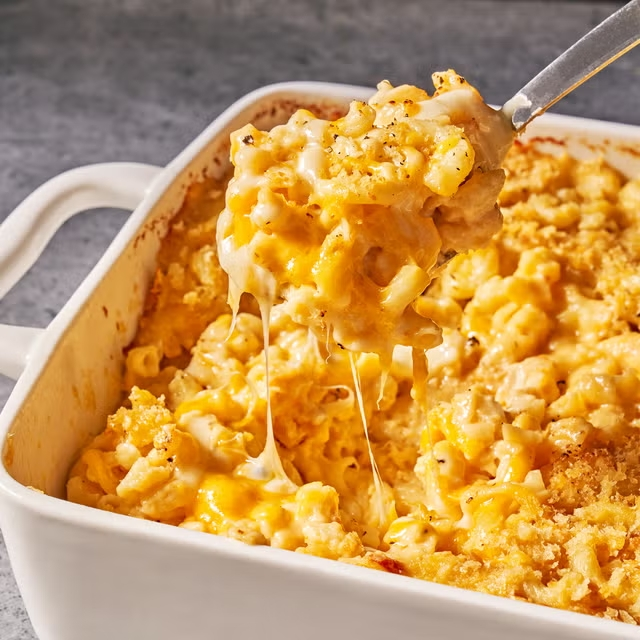

Mac and Cheese

We have some big mac and cheese lovers in the house, as this is a meal enjoyed by many people!
Will feed a family of 2-3 for a couple days throughout the week. Good refrigerated for up to 3 days, can also freeze.
Ingredients
- 8 oz or 1.5 cups Reggano Elbow Macaroni
- 4 tbsp butter
- 4 tbsp flour
- 2 cups milk
- 1/2 tsp salt
- Black pepper to taste
- 8 oz or 2 cups shredded sharp cheddar cheese
- 1/2 cup breadcrumbs
Steps
- Prepare pasta as directed on the package
- Preheat oven to 400 degrees Fahrenheit
- Spray baking dish with non-stick cooking spray
- Melt butter in large sauce pan
- Add flour mixed with salt and pepper, using a whisk to stir until well-blended
- Pour in milk gradually, stirring constantly
- Reduce heat and cook, stirring constantly, for 10 minutes
- Gradually add shredded cheddar cheese and simmer an additional 5 minutes, or until cheese melts
- Turn off the flame
- Add macaroni to saucepan and toss to coat with the cheese sauce
- Transfer macaroni to buttered baking dish and sprinkle with breadcrumbs
- Bake 20 minutes until top is golden brown